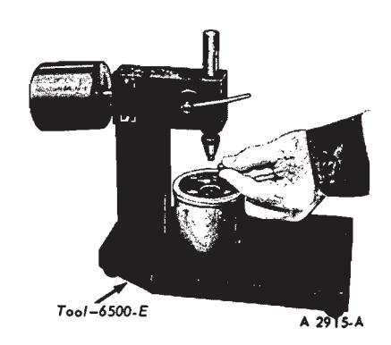
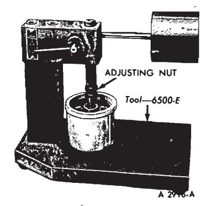
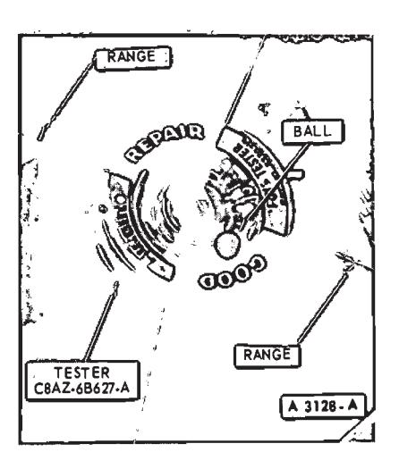

General Engine Service · 21-01-04
Compression Gauge Check
-
Be sure the crankcase oil is at the proper level and the battery is properly charged. Operate the engine for a minimum of 30 minutes at 1200 rpm or until the engine is at normal operating temperature. Turn the ignition switch off; then remove all the spark plugs.
-
Set the carburetor throttle plates in the wide open position.
-
Install a compression gauge in No. 1 cylinder.
-
Disconnect the brown lead (I terminal) and the red and blue lead (S terminal) at the starter relay or solen-
Gauge Reading Engine Condition 12 or over - 302 BOSS 15 inches or over 240 1-V Six 429 BOSS 16 or over 302-2V 17 inches or over 170 - 200 IV Six 250 I-V Six 35 \ C2 and 4 V-V8 390 2 and 4 V-V8 428-4V-V8 429 2V-4V 460-4V-V8 18 or over 351 2V and 4V NOTE—Engines equipped with dual diaphragm distributors, idle vacuum will be approximately 1 inch less. NORMAL Low and steady. Loss of power in all cylinders possibly caused by late ignition or valve timing, or loss of compression due to leakage around the piston rings. Very low. Intake manifold, carburetor, spacer or cylinder head gasket leak. Needle fluctuates steadily as speed increases. A partial or complete loss of power in one or more cylinders caused by a leaking valve, cylinder head or intake manifold gasket, a defect in the ignition system, or a weak valve spring. Gradual drop in reading at engine idle. Excessive back pressure in the exhaust system. Intermittent fluctuation. An occasional loss of power possibly caused by a defect in the ignition system or a sticking valve. Slow fluctuation or drifting of the needle. Improper idel mixture adjustment or carburetor, spacer or intake manifold gasket leak, or restricted crankcase ventilation system.
Fig. 4 — Manifold Vacuum Gauge Readings
oid on the Thunderbird, Lincoln Continental or Continental Mark III. Install an auxiliary starter switch between the battery and S terminals of the starter relay or solenoid. Using the auxiliary starter switch, crank the engine (with the ignition switch off) at least five compression strokes and record the highest reading.
Note the approximate number of compression strokes required to obtain the highest reading.
- Repeat the test on each cylinder, to obtain the highest reading on the No. 1 cylinder.
Test Conclusion
The indicated compression pressures are considered normal if the lowest reading cylinder is within 75% of the highest. Refer to the following example and the Compression Pressure Limit Chart.
Seventy-five (75%) percent of 140, the highest cylinder reading is 105. Therefore, cylinder No. 7 being less than 75% of cylinder No. 3 indicates an improperly seated valve or worn or broken piston rings.
If one, or more, cylinders read low, squirt approximately one (1) tablespoon of engine oil on top of the pistons in the low reading cylinders. Repeat compression pressure check on these cylinders.
-
If compression improves considerably, the piston rings are at fault.
-
If compression does not improve, valves are sticking or seating poorly.
-
If two adjacent cylinders indi-
Cylinder
No.Quick
Reference1 134 2 128 3 140 4 127 5 122 6 135 7 100 8 129 Fig. 5 — Example Compression Readings cate low compression pressures and squirting oil on the pistons does not increase the compression, the cause may be a cylinder head gasket leak between the cylinders. Engine oil and/or coolant in the cylinders could result from this problem.
It is recommended the following quick reference chart be used when checking cylinder compression pressures. The chart has been calculated so that the lowest reading number is 75% of the highest reading.
After checking the compression pressures in all cylinders, it was found that the highest reading obtained was 196 psi. The lowest pressure reading was 155 psi. By locating 196 in the maximum column it is seen that the lowest allowable pressure is 147 psi. Since the lowest cylinder reading was 155 psi. The engine is within specifications and the compression is considered satisfactory.
Hydraulic Valve Lifter
Hydraulic valve infter noise may be caused by improper operating clearance as a result of loose adjusting nuts or improper initial adjustment. Always check rocker arm to valve stem clearance before condemning or replacing a valve lifter.
Dirt, deposits of gum and varnish and air bubbles in the lubricating oil can cause hydraulic valve lifter failure or malfunction.
Dirt, gum and varnish can keep a check valve from seating and cause a loss of hydraulic pressure. An open valve disc will cause the plunger to force oil back into the valve lifter reservoir during the time the push rod is being lifted to force the valve from its seat.
Air bubbles in the lubricating system can be caused by too much oil in the system or too low an oil level. Air may also be drawn into the lubricat-
Compression Pressure Limits
| Maximum PSI | Minimum PSI | Maximum PSI | Minimum PSI | Maximum PSI | Minimum PSI |
|---|---|---|---|---|---|
| 134 | 101 | 174 | 131 | 214 | 160 |
| 136 | 102 | 176 | 132 | 216 | 162 |
| 138 | 104 | 178 | 133 | 218 | 163 |
| 140 | 105 | 180 | 135 | 220 | 165 |
| 142 | 107 | 182 | 136 | 222 | 166 |
| 144 | 108 | 184 | 138 | 224 | 168 |
| 146 | 110 | 186 | 140 | 226 | 169 |
| 148 | 111 | 188 | 141 | 228 | 171 |
| 150 | 113 | 190 | 142 | 230 | 172 |
| 152 | 114 | 192 | 144 | 232 | 174 |
| 154 | 115 | 194 | 145 | 234 | 175 |
| 156 | . 117 | 196 | 147 | 236 | 177 |
| 158 | 118 | 198 | 148 | 238 | 178 |
| 160 | 120 | 200 | 150 | 240 | 180 |
| 162 | 121 | 202 | 151 | 242 | 181 |
| 164 | 123 | 204 | 153 | 244 | 183 |
| 166 | 124 | 206 | 154 | 246 | 184 |
| 168 | 126 | 208 | 156 | 248 | 186 |
| 170 | 127 | 210 | 157 | 250 | 187 |
| 172 | 129 | 212 | 158 |
Fig. 6 — Quick Reference Compression Pressure Limit Chart ing system through an opening in a damaged oil pick-up tube. Air in the hydraulic system will cause a loss of hydraulic pressure.

Fig. 7 — Placing Steel Ball in Valve Lifter Plunger

Fig. 8 — Adjusting the Ram Length
Assembled valve lifters can be tested with tool 6500-E to check the leak down rate. The leak down rate specification (Part 21-09) is the time in seconds for the plunger to move the length (Part 21-09) of its travel while under a 50 lb load. Test the valve lift ers as follows:
-
Disassemble and clean the lifter to remove all traces of engine oil. Lifters cannot be checked with engine oil in them. Only the testing fluid can be used.
-
Place the valve lifter in the tester, with the plunger facing upward. Pour hydraulic tester fluid into the cup to a level that will cover the valve lifter assembly. The fluid can be purchased from the manufacturer of the tester. Do not use kerosene or any other fluid for they will not provide an accurate test.
-
Place a 5/16-inch steel ball in the plunger cap (Fig. 7).
-
Adjust the length of the ram (Fig. 8) so that the pointer is 1/16 inch below the starting mark when the ram contacts the valve lifter plunger, to facilitate timing as the pointer passes the Start Timing mark.
Use the center mark on the pointer scale as the Stop Timing point instead of the original Stop Timing mark at the top of the scale.
-
Work the valve lifter plunger up and down until the lifter fills with fluid and all traces of air bubbles have disappeared.
-
Allow the ram and weight to force the valve lifter plunger downward. Measure the exact time it takes for the pointer to travel from the Start Timing to the Stop Timing marks of the tester.
-
A valve lifter that is satisfactory must have a leak-down rate (time in seconds) within the minimum and maximum limits specified.
-
If the valve lifter is not within specifications, replace it with a new lifter. It is not necessary to disassemble and clean new valve lifters before testing, because the oil contained in new lifters is test fluid.
-
Remove the fluid from the cup and bleed the fluid from the lifter by working the plunder up and down. This step will aid in depressing the lifter plungers when checking the valve clearance.
Positive Closed-Type Ventilation System
A malfunctioning closed crankcase ventilation system may be indicated by loping or rough engine idle. Do not attempt to compensate for this idle condition by disconnecting the crankcase ventilation system and making carburetor adjustments. The removal of the crankcase ventilation system from the engine will adversely affect the fuel economy and engine ventilation with resultant shortening of engine life.
To determine whether the loping or rough idle condition is caused by a malfunctioning crankcase ventilation system, perform either of the following tests.
Air Intake Test
This test is performed with the crankcase ventilation tester C8AZ-6B627-A (Fig. 9) which is operated by the engine vacuum through the oil fill opening. Follow the procedures described below to install the tester and check the crankcase ventilation sys- tem for faulty operation.

Fig. 9 — Crankcase Ventilation System Tester
-
With the engine at normal operating temperature, remove the oil filler cap.
-
Hold the tester C8AZ-6B627-A over the opening in the valve cover. Make sure that the surface is flat to form a seal between the cover and tester. If the cover is distorted, shape it as required to make an air tight seal. An air leak between the cover and tester will render the tester inoperative.
-
Start the engine and allow it to operate at the recommended idle speed.
-
Hold the tester over the oil filler cap opening making sure that there is a positive seal between the tester and cover.
-
If the ball settles in the Good (green) area, the system is functioning properly. If the ball settles in the Repair (red) area, clean or replace the malfunctioning components as required.
-
Repeat the test after repairs are made to make sure that the crankcase ventilation system is operating satisfactorily.
Clean or replace the malfunctioning components as required. Repeat the test to ensure that the crankcase ventilation system is operating satisfactorily.
Crankcase Ventilation Regulator Valve Test
Install a known good regulator valve in the crankcase ventilation system
Start the engine and compare the engine idle condition to the prior idle condition
If the idle condition is found to be satisfactory, replace the regulator valve and clean the hoses, fittings, etc.
If the loping or rough idle condition remains when the good regulator valve is installed, the crankcase ventilation regulator valve is not at fault. Check the crankcase ventilation system for restriction at the intake manifold or carburetor spacer. If the system is not restricted, further engine component diagnosis will have to be conducted to find the malfunction.